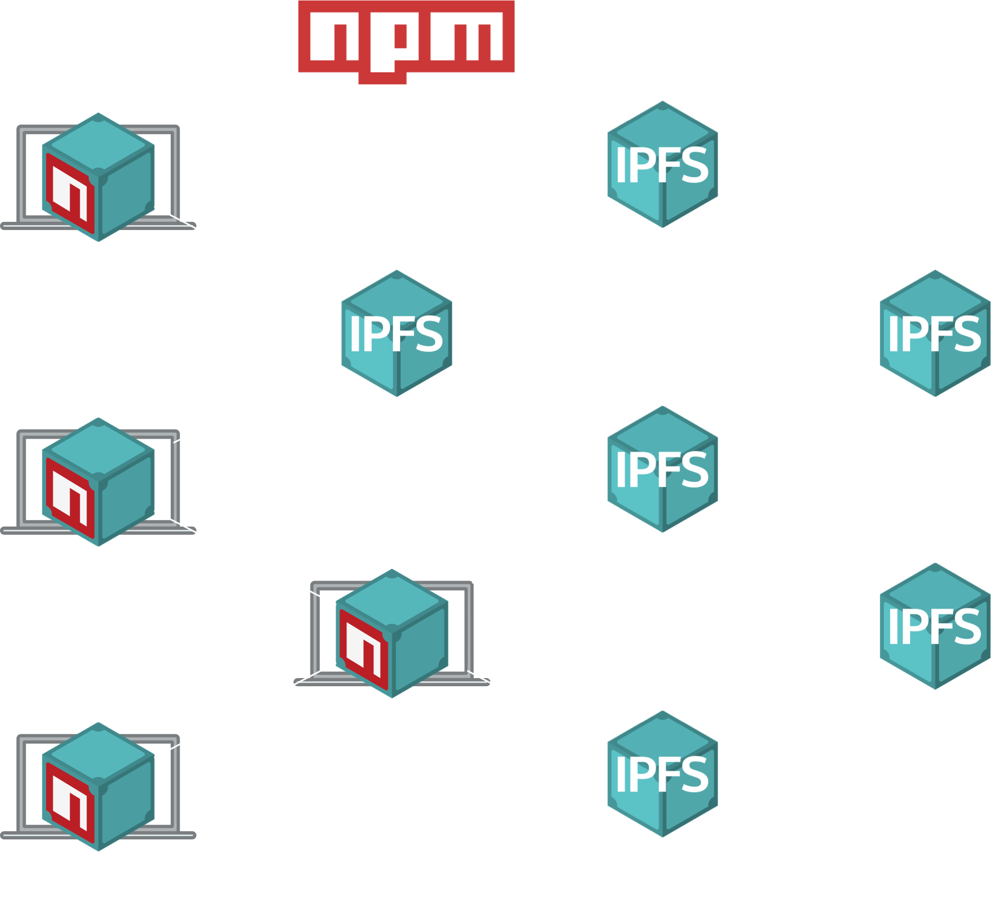
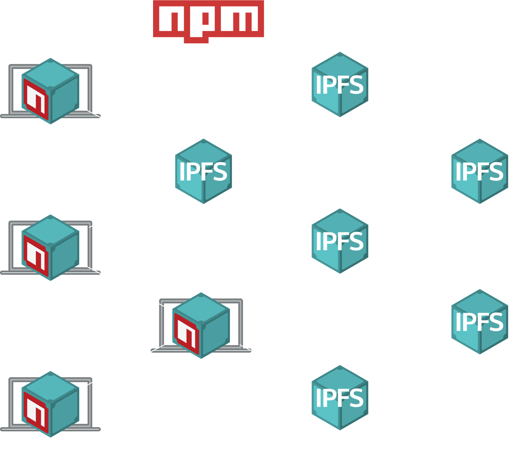

Alex Potsides
JavaScript Developer at Protocol Labs
Working on IPFS
@achingbrain on GitHub and Twitter


IPFS
The Interplanetary File System
- Content addressed
- Distributed File System
Content addressing

http://example.com/cat.gif
No guarantee of content integrity
http://example.com/cat.gif
Routing is baked in

http://example.com/cat.gif
Easy to block
http://example.com/cat.gif
Content addressing
- Content has an identifer
QmcniBv7UQ4gGPQQW2BwbD4ZZHzN3o3tPuNLZCbBchd1zh
- The identifier can be used to
- ✅ Resolve content
- ✅ Verify content
Centralised
Decentralised
Distributed
Each file is broken into chunks

Each network node makes content available
The network resolves content based on the hash

And it's all open source
3100+ contributors
340+ contributing every month

npm install --registry=https://registry.js.ipfs.io
yarn --registry=https://registry.js.ipfs.io

But how is this better?
You can!
npm install -g ipfs-npm
ipfs-npm install
or
ipfs-yarn
 

All open source
https://github.com/ipfs/js-ipfs
https://github.com/ipfs-shipyard/npm-on-ipfs
https://github.com/ipfs-shipyard/ipfs-npm-registry-mirror
Thanks!
Alex Potsides
@achingbrain
Q&A
Alex Potsides
@achingbrainnpm on ipfs